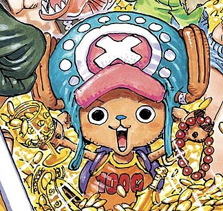

Summary
Monkey. D. Luffy refuses to let anyone or anything stand in the way of his quest to become the king of all pirates. With a course charted for the treacherous waters of the Grand Line and beyond, this is one captain who'll never give up until he's claimed the greatest treasure on Earth, the One Piece. With a loyal crew by his side that he has named the Strawhats, anything is possible.
Crew
Luffy

| Dream | To acquire the One Piece and become the greatest pirate. Strong dream of everyone having freedom in the world |
|---|---|
| Devil Fruit | Gomu Gomu No Mi which is a Paramecia-type Devil Fruit that grants the user's body the properties of rubber. |
| Role | The Captain of the Strawhats |
Zoro

| Dream | To become the worlds greatest swordsman |
|---|---|
| Devil Fruit | He does not currently possess a Devil Fruit |
| Role | The right hand man of the Strawhats |
Sanji
| Dream | To find the All Blue |
|---|---|
| Devil Fruit | He does not currently possess a Devil Fruit |
| Role | The main cook of the Strawhats |
Nami

| Dream | To draw a map of the entire world |
|---|---|
| Devil Fruit | She does no currently possess a Devil Fruit |
| Role | The navigator of the Strawhats |
Chopper
| Dream | To be able to cure any disease in the world |
|---|---|
| Devil Fruit | Hito Hito no Mi, a Zoan-type Devil Fruit that allows him to transform into a human and reindeer-hybrid at will. |
| Role | The doctor of the Strawhats |
Usopp

| Dream | To become a brave warrior of the sea and to become the real Soge-king |
|---|---|
| Devil Fruit | He does not currently possess a Devil Fruit |
| Role | The sniper of the Strawhats |
Franky

| Dream | To use his dream ship, The Sunny, to go around the whole world |
|---|---|
| Devil Fruit | He does not currently have a Devil Fruit but he is a Cyborg |
| Role | The shipwright of the Strawhats |
Nico Robin

| Dream | To read all of the Poneglyphs and learn the world's true history |
|---|---|
| Devil Fruit | Hana Hana no Mi, a Paramecia-type Devil Fruit that allows her to sprout duplicates of any of her body parts from any surface within her range. |
| Role | The main source of knowledge for the crew because of her ability to read the Poneglyphs |
Brook
| Dream | To reunite with a whale named Laboon. |
|---|---|
| Devil Fruit | Yomi Yomi no Mi, a Paramecia-type Devil Fruit that allowed his soul to return to the world of the living and reinhabit his body after he died. |
| Role | The musician of the StrawHats |
Jinbe

| Dream | To break the cycle of hatred between Fishman and humans |
|---|---|
| Devil Fruit | He does no currently possess a Devil Fruit |
| Role | The helmsman of the Strawhats |